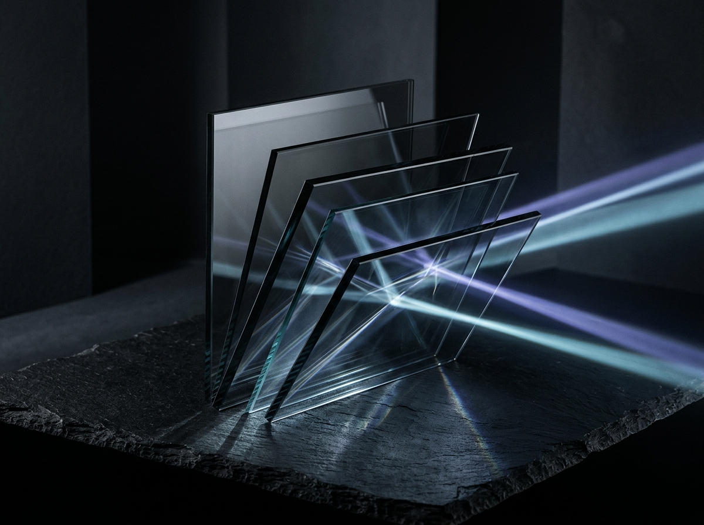

Tested System Prompts
Thirty deeply structured system prompts for Full-Stack systems, UI/UX design, SaaS MVPs, landing pages, APIs, Chrome extensions, mobile apps, and browser games. Expand any card for full specs and pro vibe-coding guidance.

No matching prompts found
Clear your search term or reset the active domain filter to browse all 30 prompts.
How to Use This Guide
Three rules for deterministic AI code generation
Anchor Models Before First Code
Paste your chosen prompt into
.cursorrules,
CLAUDE.md, or the AI Studio System Instructions box before typing your
product idea so constraints steer every file created.
Separate Data Contracts from UI
Run a Full-Stack or Database & Auth prompt first to define Zod/Drizzle/SQL types, then run a dedicated UI/UX Design prompt in a clean thread against those verified schemas.
Customize Bracketed Stack Specs
Append your exact versions (React 19, Next.js 15, Tailwind v4, PostgreSQL 16) and file tree right below the copied prompt so the model aligns imports and folder conventions cleanly.
Pro Workflows
High-converting prompt chaining patterns
SaaS Foundation Chain
Combine Schema-First Full-Stack Architect → Supabase PostgreSQL + Strict RLS → Stripe Subscriptions + Webhook Sync to ship paid multi-tenant SaaS apps without insecure billing states.
Zero-Slop Frontend Chain
Pair Anti-Slop Editorial UI System with Responsive 375px–1440px Tailwind Grid and Accessible Modal & Command Palette so generated dashboards pass keyboard and mobile checks on the first pass.
Chrome & Indie Product Chain
Launch micro-products cleanly using Manifest V3 TypeScript Scaffold + Shadow DOM Webpage Overlay + DevTool Launch Landing Page with working CLI copy widgets.
Comparison Insights
System Prompts vs. Ad-Hoc Chat Instructions
| Engineering Dimension | Vague One-Line Prompt | Tested System Prompt (This Vault) |
|---|---|---|
| Type Safety & Schemas |
Ad-hoc
any payloads,
mismatched API shapes
|
Strict shared Zod / TypeScript contracts first |
| Security & Secrets | Risk of client-side keys or missing RLS rules | Server-only env boundaries & explicit auth gates |
| UI & Accessibility | Noisy pill clutter, missing focus traps | WCAG AA contrast, tabular-nums, keyboard navigation |
| Error Handling | Silent mock fallbacks hiding broken APIs | Explicit loading, empty, and retryable error states |
Frequently Asked Questions
System Prompts FAQ
Where should I paste these system prompts for maximum consistency?
Paste architectural and UI system prompts into persistent
workspace rule files such as
.cursorrules,
.windsurfrules, CLAUDE.md,
or the System Instructions box inside Google AI Studio so every
follow-up turn inherits the same guardrails.
Can I combine a UI/UX prompt with a Full-Stack or Database prompt?
Yes. The cleanest workflow is running a Schema-First or Database prompt in Turn 1 to lock down your database types and API routes, then applying a UI/UX Design prompt in Turn 2 to build responsive components directly against those verified types.
Why do these prompts forbid stub handlers and mock fallback arrays?
When LLMs encounter ambiguity, they often silence failed API calls by returning hardcoded demo data inside catch blocks. Banning silent mocks ensures broken endpoints surface visible errors immediately during development.
Do these prompts work equally well across Claude, Gemini, and GPT models?
Yes. Each prompt is written with explicit, framework-agnostic constraints—naming exact boundaries, edge cases, and security checks rather than model-specific tricks—so Claude, Gemini, and GPT models execute them reliably.